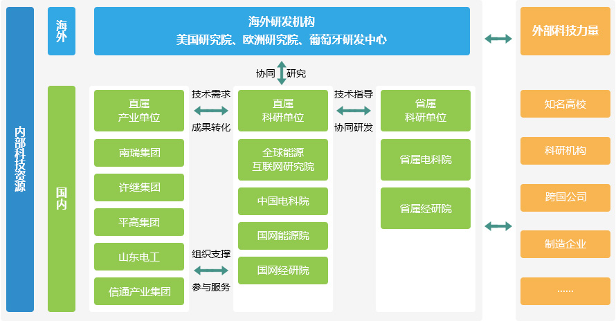
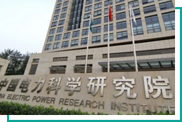
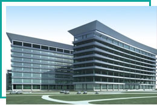
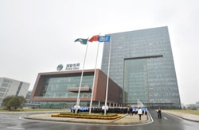
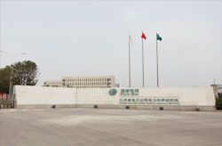
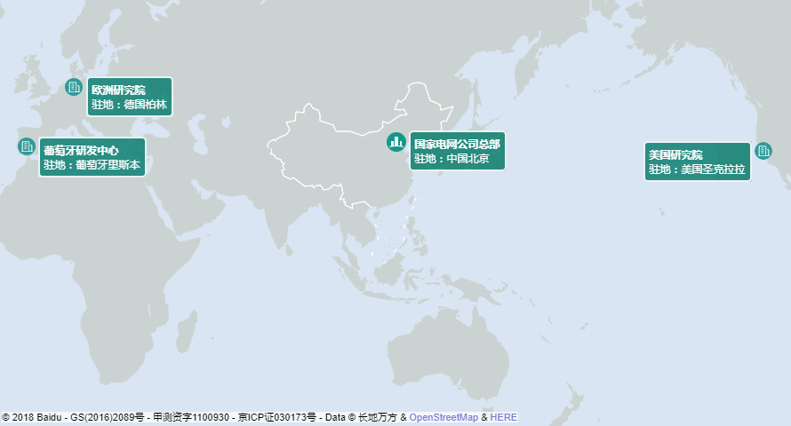
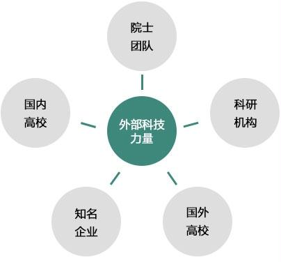

Innovation system
At present, the State Grid Corporation has initially established a direct research unit, a direct industrial unit, a provincial research unit, and an overseas R&D institution as the main body. The external technology is the synergy, the level is clear, the division of labor is clear, and it is beneficial to play their respective advantages and facilitate business synergy. Technology innovation system.

Direct research unit
-
China Electric Power Research Institute Focus on the power grid and basic common key technology research and development, test and technical
standards, to carry out support services provincial co-EPRIGlobal Energy Mutual
Internet InstituteConduct basic, forward-looking, cutting-edge technology research and equipment development around the global energy Internet development needs State Grid Research Institute Focus on power grid planning and engineering design technology research, undertake power grid planning, design, technical analysis, standard formulation, etc. State Grid Energy Institute Focus on the company's strategy and operational technology research, providing decision support for the company's strategic planning, operational analysis, marketing development, power reform, internationalization and other issues -


Including China Electric Power Research Institute, Global Energy Internet Research Institute, State Grid Economic Research Institute and State Grid Energy Institute, it will become a technology innovation center and support service center that leads the company and power grid development.
Direct industrial unit
- 
-
Including Nanrui, Xuji, Pinggao, Shandong Electrician, and ICT Group, the Group (company), around the electrical equipment industry chain, develop high-end products with core competitiveness, carry out product research and development, scientific and technological achievements transformation and marketing work To build a high-end equipment research and development center and benefit creation center that will lead the development of international electrical technology.
Provincial research unit
- 
-
Including provincial electric power institutes, provincial economic research institutes, etc., provide technical support services for provincial (city) companies, undertake major project supporting research, field application technology research, test and other tasks. It is speeding up the construction of a technical guidance mechanism between the directly affiliated scientific research units and the provincial scientific research units, and improving the innovation and support services of the provincial scientific research units.
Overseas research and development institutions
-
As the company's overseas innovative technology research and development organization, the business is positioned in the global energy Internet, smart grid related disciplines, forward-looking research, service companies major technology, product innovation, become the company's cutting-edge scientific and technological achievements transformation incubator, scientific research system reform Test field.
- 
Overseas technology power
-
Including domestic and foreign well-known universities, enterprises and scientific research institutions, academician teams, etc., continuously strengthen cooperation with externally superior R&D resources, increase the proportion of science and technology projects released, enhance innovation vitality and efficiency, improve the company's social influence, and create a good external environment.
- 